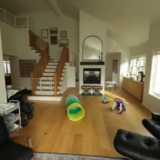

|
Caped Doshi I am a student at Rensselaer Polytechnic Institute in San Francisco, where I am a third-year student in Mathematics and Computer Science.
Email / CV / Google Scholar / Github |

|
ResearchI'm interested in statistical machine learning, numerical linear algebra, and random matrix theory. |
|

|
Zip-NeRF: Anti-Aliased Grid-Based Neural Radiance Fields
Jonathan T. Barron, Ben Mildenhall, Dor Verbin, Pratul Srinivasan, Peter Hedman ICCV, 2023 (Oral Presentation) project page / video / arXiv Combining mip-NeRF 360 and grid-based models like Instant NGP lets us reduce error rates by 8%–77% and accelerate training by 24x. |

|
DreamBooth3D: Subject-Driven Text-to-3D Generation
Amit Raj, Srinivas Kaza, Ben Poole, Michael Niemeyer, Nataniel Ruiz, Ben Mildenhall, Shiran Zada, Kfir Aberman, Michael Rubinstein, Jonathan T. Barron, Yuanzhen Li, Varun Jampani ICCV, 2023 project page / arXiv Combining DreamBooth (personalized text-to-image) and DreamFusion (text-to-3D) yields high-quality, subject-specific 3D assets with text-driven modifications |

|
BakedSDF: Meshing Neural SDFs for Real-Time View Synthesis
Lior Yariv*, Peter Hedman*, Christian Reiser, Dor Verbin, Pratul Srinivasan, Richard Szeliski, Jonathan T. Barron, Ben Mildenhall SIGGRAPH, 2023 project page / video / arXiv We use SDFs to bake a NeRF-like model into a high quality mesh and do real-time view synthesis. |

|
MERF: Memory-Efficient Radiance Fields for Real-time View Synthesis in Unbounded Scenes
Christian Reiser, Richard Szeliski, Dor Verbin, Pratul Srinivasan, Ben Mildenhall, Andreas Geiger, Jonathan T. Barron, Peter Hedman SIGGRAPH, 2023 project page / video / arXiv We use volumetric rendering with a sparse 3D feature grid and 2D feature planes to do real-time view synthesis. |

|
Eclipse: Disambiguating Illumination and Materials using Unintended Shadows
Dor Verbin, Ben Mildenhall, Peter Hedman, Jonathan T. Barron, Todd Zickler, Pratul Srinivasan arXiv, 2023 project page / video / arXiv Shadows cast by unobserved occluders provide a high-frequency cue for recovering illumination and materials. |
 
|
AligNeRF: High-Fidelity Neural Radiance Fields via Alignment-Aware Training
Yifan Jiang, Peter Hedman, Ben Mildenhall, Dejia Xu, Jonathan T. Barron, Zhangyang Wang, Tianfan Xue CVPR, 2023 project page / arXiv Accounting for misalignment due to scene motion or calibration errors improves NeRF reconstruction quality. |

|
DreamFusion: Text-to-3D using 2D Diffusion
Ben Poole, Ajay Jain, Jonathan T. Barron, Ben Mildenhall ICLR, 2023 (Oral Presentation, Outstanding Paper Award) project page / arXiv / gallery We optimize a NeRF from scratch using a pretrained text-to-image diffusion model to do text-to-3D generative modeling. |
 
|
Learning a Diffusion Prior for NeRFs
Guandao Yang, Abhijit Kundu, Leonidas J. Guibas, Jonathan T. Barron, Ben Poole ICLR Workshop, 2023 Training a diffusion model on grid-based NeRFs lets you (conditionally) sample NeRFs. |
 
|
MIRA: Mental Imagery for Robotic Affordances
Lin Yen-Chen, Pete Florence, Andy Zeng, Jonathan T. Barron, Yilun Du, Wei-Chiu Ma, Anthony Simeonov, Alberto Rodriguez, Phillip Isola CoRL, 2022 NeRF lets us synthesize novel orthographic views that work well with pixel-wise algorithms for robotic manipulation. |
 
|
SAMURAI: Shape And Material from Unconstrained Real-world Arbitrary Image Collections
Mark Boss, Andreas Engelhardt, Abhishek Kar, Yuanzhen Li, Deqing Sun, Jonathan T. Barron, Hendrik P. A. Lensch, Varun Jampani NeurIPS, 2022 project page / video / arXiv A joint optimization framework for estimating shape, BRDF, camera pose, and illumination from in-the-wild image collections. |
 
|
Polynomial Neural Fields for Subband Decomposition
Guandao Yang*, Sagie Benaim*, Varun Jampani, Kyle Genova, Jonathan T. Barron, Thomas Funkhouser, Bharath Hariharan, Serge Belongie NeurIPS, 2022 Representing neural fields as a composition of manipulable and interpretable components lets you do things like reason about frequencies and scale. |
 
|
Fast and High-Quality Image Denoising via Malleable Convolutions
Yifan Jiang, Bartlomiej Wronski, Ben Mildenhall, Jonathan T. Barron, Zhangyang Wang, Tianfan Xue ECCV, 2022 project page / arXiv We denoise images efficiently by predicting spatially-varying kernels at low resolution and using a fast fused op to jointly upsample and apply these kernels at full resolution. |
Miscellanea |


|
Feel free to steal this website's source code. Do not scrape the HTML from this page itself, as it includes analytics tags that you do not want on your own website — use the github code instead. Also, consider using Leonid Keselman's Jekyll fork of this page. |